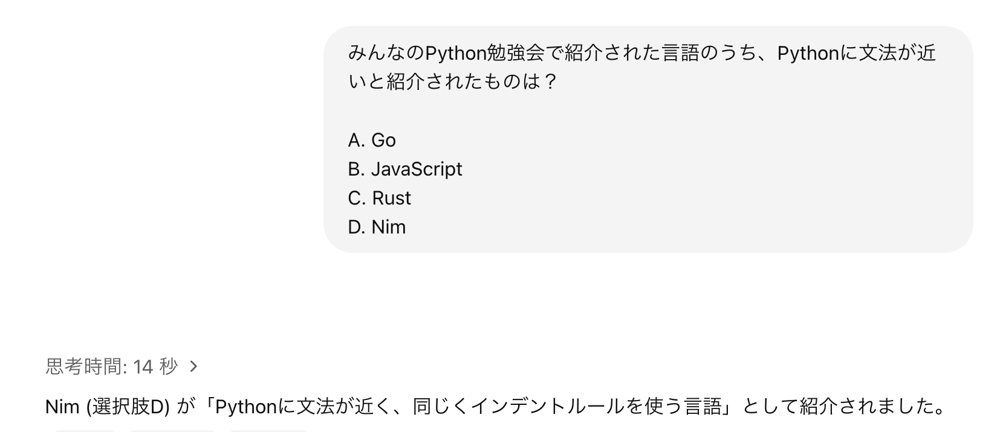
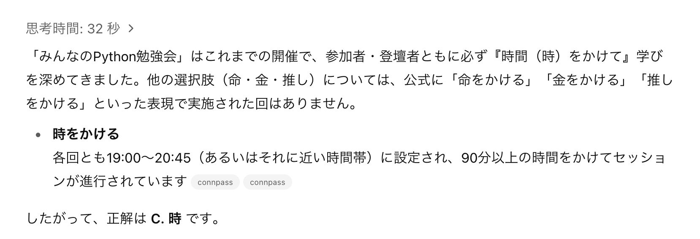

クイズでお祝い！ みんなのPython勉強会10周年
- Event:
みんなのPython勉強会#114
- Presented:
2025/05/30 nikkie
クイズの時間だあああああああああ
皆さまいつもご参加ありがとうございます！
参加型のstapyクイズ を実施します
参加者数の推移や反響が大きかった発表などから出題します。(connpass参照)
出題者、誰よ？
nikkie（にっきー） ／ みんなのPython勉強会 スタッフ
機械学習エンジニア・LLM・自然言語処理（We're hiring!）
ブログ 連続 920日突破
私とstapy
初参加は 2018年1月 みんなのPython勉強会#31
そのときの レポートブログ
その年の 9月（#38） で4代目LT王子🤴襲名
4択クイズです！
鉛筆コロコロ🎲Pythonスクリプトも用意しました
本トークわずかのPython要素
# /// script
# requires-python = ">=3.11"
# dependencies = [
# "rich",
# ]
# ///
Inline script metadata (PEP 723)
uv run app.py や pipx run app.py
Pythonスクリプトに必要な仮想環境をツールにおまかせできるんです！（PyCon JP 2024 で話しました）
10年前と比べて 超便利 になってます。全人類使ってくれ〜📣
手元で鉛筆転がしたい方へ
uv run https://raw.githubusercontent.com/ftnext/2025-slides/refs/heads/main/samplecode/quiz/app.pypipx run https://raw.githubusercontent.com/ftnext/2025-slides/refs/heads/main/samplecode/quiz/app.py💬より手軽な方法（当日コメントより）
python -c "import random; print(random.choice('ABCD'))"私は今回Richでコンソールアプリを作ってみたかったのです
それではクイズを始めます！
4択クイズ 全8問です。お手元で計数 ください🙏
Zoomのチャット欄やTwitter #stapy への投稿もよければどうぞ
現地参加者限定で成績上位者にPython書籍プレゼント！
AIを使っても大丈夫です
GPT + Web search / Claude + Web search
第1問
いま何回目？
いま何回目？
114
116
118
120
正解は A. 114
o4-mini + Web searchさん 🙆♂️

第2問
これまでのみんなのPython勉強会で、2回開催 したナンバリングはどれ？
2回開催したナンバリングはどれ？
33回目
38回目
43回目
2回開催したことはない
o4-mini「D. 2回開催したことはない」、さて

ヒントは時期
33回目（春）
38回目（夏）
43回目（春）
2回開催したことはない
正解は B. 38回目
2018年8月の #38 が台風で中止（サンサン）
第3問
2025年時点で、参加者最大を記録したのは何年？
参加者最大を記録したのは何年？
2019年
2020年
2021年
2022年
o4-mini「C. 2021年」

正解は B. 2020年
2020年8月の #60 にて 595人参加 を記録（アーカイブ）
マーケティングとデータアナリティクスとPython
コロナ禍で オンライン開催 に移り、参加者が増えました

第4問
本日の発表者と司会の参加回数を合計して近い数字は？
司会：どいつまさん
辻さん
nikkie
3名の参加回数の合計に近い数字は？
200
210
240
300
o4-mini「D. 300」
connpassの 全イベント 参加回数を集計

正解は B. 210
105 (辻さん) + 83 (nikkie) + 21 (どいつまさん)
第5問
「みんなのPython勉強会#100」はどの日に開催された？
「みんなのPython勉強会#100」はどの日に開催された？
2024年1月25日
2024年2月22日
2023年11月15日
2023年10月12日
正解は A. 2024年1月25日
2023年11月が99回、12月にお休みして翌年1月に100回
o4-mini「A. 2024年1月25日」🙆♂️

第6問
stapy 参加回数 の多い順に並べると？
辻さん
nikkie
kiotoさん
soogieさん
参加回数の多い順に並んでいるものは？
辻さん > kiotoさん > soogieさん > nikkie
kiotoさん > soogieさん > 辻さん > nikkie
kiotoさん > 辻さん > soogieさん > nikkie
nikkie > 辻さん > kiotoさん > soogieさん
発動、50:50
A または C です
- A:
辻さん > kiotoさん > soogieさん > nikkie
- C:
kiotoさん > 辻さん > soogieさん > nikkie
正解は C
名前 |
|
kiotoさん |
118回 |
辻さん |
105回 |
soogieさん |
91回 |
nikkie |
83回 |
参考までに、o4-miniさん「A」
kiotoさん
いつもご参加ありがとうございます
オンラインもくもく会 （with Uematsuさん）
soogieさん
いつもご参加ありがとうございます
2022年5月 #81 『職場にPythonistaを増やすには』👏
第7問
みんなのPython勉強会で紹介された言語のうち、Pythonに 文法が近い と紹介されたものは？
Pythonに文法が近いと紹介されたものは？
Go
JavaScript
Rust
Nim
o4-mini「D. Nim」
正解は D. Nim
2022年3月 #79 「Diversity & Inclusion of Programming Language」
medyさんによる「Pythonistaに伝えたいNimの魅力」
第8問
みんなのPython勉強会が過去に かけた ことがあるものはどれ？
過去に かけた ことがあるのは？
命
金
時
推し
o4-mini「C. 時」
正解は D. 推し
2020年2月 #54 推し×IT（アーカイブ）
Togetterまとめは1万PVを超える https://posfie.com/@abenben/p/p6nAikd
クイズ終了〜！
おつかれさまでした
o4-miniさん 3/8（第1,5,7問）
初代stapyクイズ王 表彰👏
おめでとうございます！
オフラインで賞品の贈呈
皆さまの声が聞こえてくるようです
「出題者の人間性を疑う」（並べ替えとか「かけた」とか）
「あの回がクイズに入っていないなんて」
「わたしはこれが神回」ぜひ教えてください
💬阿久津さんの神回
Pepperが来た、10回は神回かな。
💬どいつまさんの神回
108回「人生100年時代、長く現役で働くには」
クイズでお祝い！ みんなのPython勉強会10周年
クイズならびに本勉強会にご参加いただき、ありがとうございました
stapy アーカイブ
過去 リーディング・エッジ社